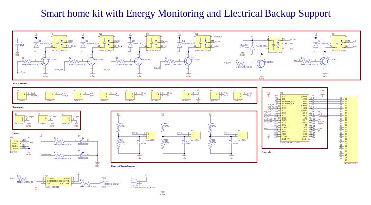
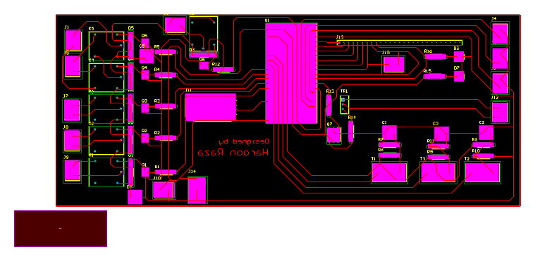
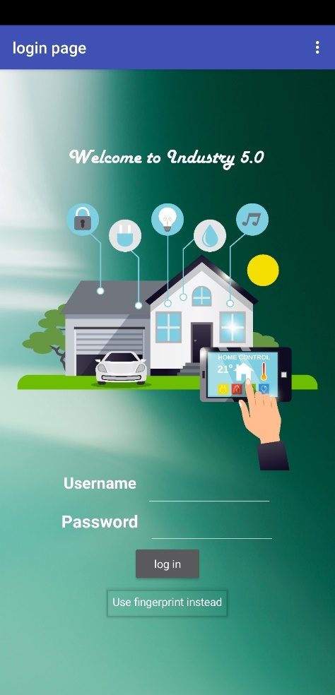
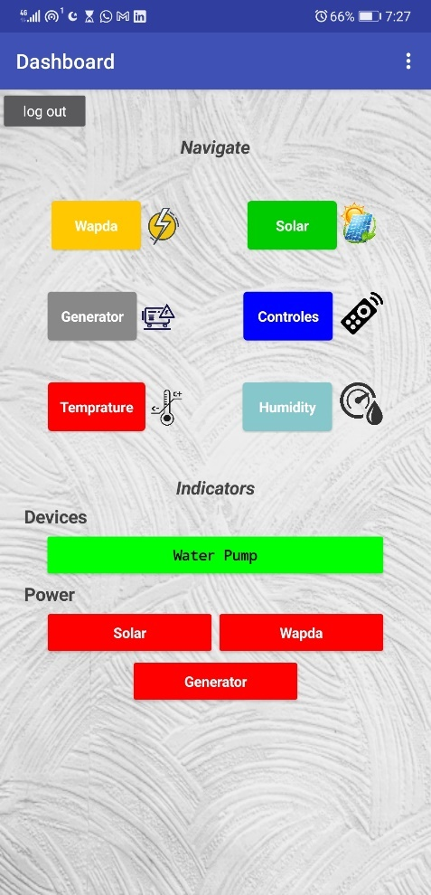
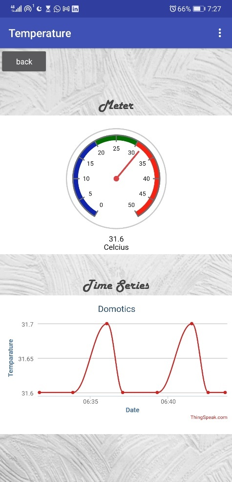

A three-source home automation system built around an ESP32, also referred to in coursework as the "Smart Home System with ESP32." It monitors WAPDA grid power, solar, and a backup generator, switches between them automatically, and reports live telemetry and control to a mobile app.
This case study and the coursework titled "Smart Home System with ESP32" describe the same build, same ESP32 controller, same Firebase backbone, same source-switching logic. This page merges both write-ups into a single, complete account.
Overview
Most homes in areas with an unreliable grid end up depending on a mix of power sources without much visibility into any of them. This project set out to change that by putting an ESP32 at the centre of a monitoring and control kit that watches all three sources, measures load and environmental conditions, and switches to the next best source automatically instead of waiting for someone to notice the lights are out.
The system reports everything it observes, current source, load, temperature, humidity, and pump status, to Firebase Realtime Database and ThingSpeak, and exposes control and live graphs through a mobile app built with MIT App Inventor.
Key features
- Load monitoring: a current-transformer circuit measures and reports real-time power consumption on the WAPDA line.
- Environmental sensing: a DHT sensor streams temperature and humidity to the app.
- Power-source indicators: the app shows which of generator, solar, and grid supply is currently available.
- Automatic water pump control: the pump switches on and off based on tank level, using both a "threshold" and a "full" sensing point.
- Auto load shifting: load is shifted automatically depending on which power source is available, favouring solar first.
- Remote appliance control: connected devices can be switched from the mobile app rather than requiring a physical switch.
- Generator-fault alerts: common engine faults are surfaced directly in the app instead of requiring a manual check at the panel.
- Mobile app integration: live graphs of monitored data and remote control of connected appliances.
Solar → Grid → Generator. A simple, explicit policy that supports more deliberate generator use during outages instead of switching on the first sign of a source drop.
Hardware & software
The hardware side is intentionally compact: an ESP32 development board as the controller, a current transformer for load monitoring, a DHT sensor for temperature and humidity, and a bank of relays and transistors for switching the power sources and the water pump.
On the software side, the firmware is written in the Arduino IDE and leans on a handful of libraries: WiFi.h for connectivity, EmonLib.h for current-transformer calculations, DHT.h for sensor reads, IOXhop_FirebaseESP32.h for the realtime database, ThingSpeak.h for graphing, and NTPClient.h to timestamp every reading against real-world time. Firebase stores and retrieves state, ThingSpeak renders the graphs, and the mobile app was built for display and control.
Circuit design
The schematic groups the relay-driver stage, the current-transformer inputs, the digital inputs for source and tank sensing, and the ESP32 controller into clearly separated blocks, which made the board easier to debug once it was populated.

The PCB layout keeps the relay bank and connector headers along the edges, with the ESP32 module and its supporting passives routed through the centre of the board.

Implementation
The pin map reflects how the board separates concerns: source-sensing inputs, generator and pump outputs, and the two current-transformer channels are all defined up front, which keeps the rest of the firmware readable.
// Power source sensing #define wapda 4 #define gen 15 #define solar 2 // Generator control #define self 16 #define stop 22 // Water pump #define full 19 #define threshold 18 #define pump 26 // Load monitoring #define CT_W 34 wapda_monitor.current(CT_W, 4);
In loop(), the ESP32 checks Wi-Fi status, reads temperature, humidity, and load current on independent timers, evaluates generator and pump control logic, and only writes to Firebase when a value has actually changed, which keeps the realtime database from being flooded with duplicate updates.
Results
The finished system monitors and controls the connected devices as intended: the mobile app shows real-time load, temperature, and humidity, gives control over the water pump and connected appliances, and surfaces which power source is active along with any generator faults.



Conclusion & future work
This project is a practical demonstration of the ESP32 as the hub of a small monitoring and control system: Firebase and ThingSpeak handle data storage and visualisation, while the mobile app puts real-time control and fault visibility in reach, together pointing at what a more complete smart-home platform could look like.
- Expand sensor coverage to include gas and smoke detection.
- Improve the mobile app's interface and add more control features.
- Refine the firmware for better performance and reliability.
- Explore additional cloud platforms for data storage and analytics.
- Add triac-based control and monitor all three power sources directly.
Read the design notes on source policy and failover · Read the notes on reliable ESP32 state